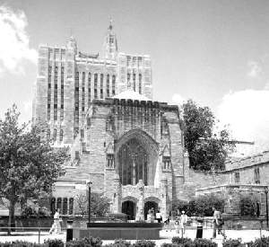
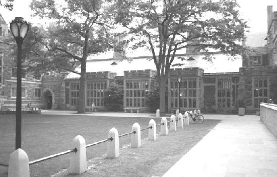
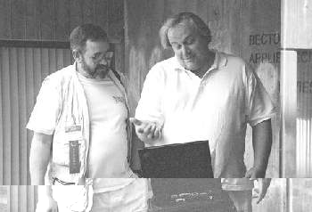
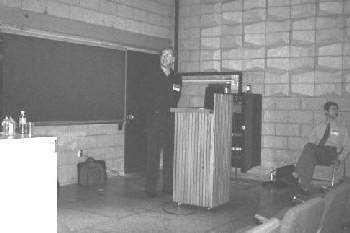
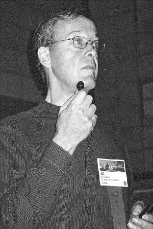
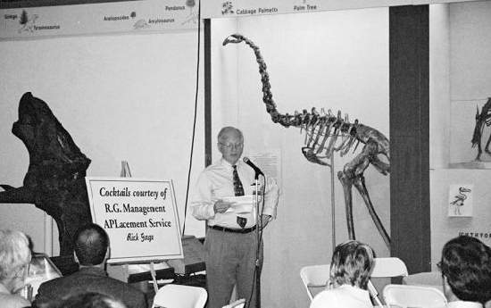
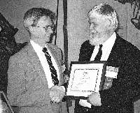

My Yale 2001 diary
Vector 18:1, page 48
This year’s annual international APL conference was held in the “Ivy League” university of Yale in the town of New Haven, Connecticut. Being a mere two hours by (commuter) train from New York, I started and ended my conference week in New York, which increased the contrast between the university and the city.
Sunday, June 24¶
I started the conference by arriving late for the opening reception, which was held in the grounds of the New Residence Hall, where I had booked a room for my stay.
The opening reception was well attended by both delegates and mosquitoes. But having spent an interesting day in Greenwich Village, watching the annual New York Gay Parade, a most entertaining event, I was very late arriving only 30 minutes before its scheduled end and missed out on most of the food. All that was left at the end was two trays of assorted cheese. These were not wasted however, and reappeared at several subsequent “evening seminars” where they complemented the Russian Vodka.

The conference accommodation was split between three locations, the New Residence Hall, the Holiday Inn and the Omni Hotel, all within a 10-minute walk from the main conference site located around the Davis Auditorium. The halls were modern and well equipped, comprising of sets of two bedroom suites each with shared bathroom, kitchenette and living area. (I was sharing with Bob Hoekstra.) These were more than adequate for our needs and far better than the facilities I have seen at any other university. The nearby Holiday Inn was the location for the main “evening seminars” sessions, which I attended without fail.Monday, June 25¶
The opening session was a talk on “Digital Fusion” given by the computer graphics expert and distinguished ACM lecturer, Judson Rosenbush. His talk started on the theme of “mould” in analogue media. That is printing uses “type” which is a mirror image of the printed result, vinyl records are pressed in a mould, and even photographs are produced via a negative. He then went on to explain how modern digital techniques were reducing production costs. If you buy a printed item, the publisher bears the cost of the paper and ink, and the distribution of it. If you purchase the same information off the Internet, you download the data and print it yourself, and YOU bear the cost of the paper and ink, and the cost of distribution (“on-line” costs while downloading.) The handling of digital information is independent of the type of information (image, text, sound, film). What we still have to digitise is taste, smell and feel. The final note I made from this talk was “power now is in the hands of who can turn off your IP number.”
I next attended a tutorial given by Gary Bergquist entitled “APL and the WWW”. Gary’s session, was as ever, an enjoyable romp, with its feet firmly placed in the idea that you can “do it in APL” via the right set of utilities.

Lunch was provided as part of the conference in the Berkley Dining Hall, alongside some of Yale’s other summer students. The food was simple but plentiful and quite let down the mock medieval splendour of the dining hall. The seven-minute walk between the conference centre and the dining hall passed through several of Yale’s “quads” and lawns with interesting buildings all around.

After lunch was the first of the Vendor Forums. This one from IBM APL2, presided over by a very laid back David Liebtag. David ran through the new features added to APL2 since the last conference, including such items as ODBC support (“as AP127 for DB2, but for ODBC”), partial line marking (copy and pasting partial lines), allowing lower case APL names on the mainframe service, and allowing bitmaps on buttons. David has and still is working hard on the APL2 product across its range.The next tutorial I attended was given by Steve Abell (a self confessed “Java Evangelist at Netscape”). Steve’s talk was both entertaining and thought-provoking and included the following quotes (as best I can remember them):
APL “an intellectual achievement of the 1st magnitude”
ALGOL60 “a wonderful improvement on its successors”
“Multiple inheritance is too dangerous for many people” but then “APL is too dangerous for many people”
The final session of the day was booked as the Dyadic Vendor Forum, but was actually part one of three, one-hour sessions on “DotNet Technology”. This first session given by John Daintree was on “The Concepts and Implementation of .NET classes”. I think this is the third time I have heard John give this talk, for which I am grateful, as it is now only just starting to sink in.
The day’s formal proceedings were completed with the Opening Reception held in the President’s Room in the Rotunda of Woolsey Hall, where we were wined and dined till 9pm.
I then joined a group who were “seeking further liquid refreshment” and wandered towards the New Haven town centre until we found a suitable watering hole. As pleasant as this was, we sere sadly dismayed when we discovered the CT liquor laws meant that all bars closed at 10pm. So we then made our way back to the Holiday Inn and Monday’s Evening Seminar, complete with Vodka and Cheese.
Tuesday, June 26¶
Somehow, I don’t think breakfast at 7:30 and session starts at 8:30 quite fit in with the Evening Seminar. Thus I seem to have missed three very good conflicting sessions: Tilman Otto’s tutorial on “Compiling APL” (which Bob Hoekstra informed me was great), Eric Baelen on “APL and Excel” (which came complete with an excellent handout, which might make it as a future article in Vector) and Steve Mansour’s paper on “A Dynamic APL GUI Equation Solver” (which I kept hearing people talk about in impressed tones).
I did however take this opportunity to talk with John Daintree, who gave me some advice on how to extract some information from Windows about the width of the client area in the Dyalog APL/W version 9 session. (Which I will write up as a “Hacker’s Corner” for Vector if I ever get it working <grin>.)
The first session I can remember was the featured speaker Richard Krafchin on “AnEmotion: Animating Email”. This talk described how PackageWorks (a well established leader in “providing dimensional direct mail solutions and marketing expertise to major corporate clients”) have developed with the aid of APL2000 (and in particular Fred Waid) high calibre animated e-mail marketing campaigns. The APL system used (patent applied for) allows “graphic artists to use a variety of multimedia tools to produce award-winning interactive presentations and animated e-mail”. (If the term “junk mail” comes to mind, equate it to “fish paste” and then equate AnEmotion to the most expensive caviar.)
Lunch was followed by the Soliton Vendor Forum of which I can remember very little of either.
I next attended Dave Liebtag’s tutorial on “Using Namespaces” in APL2. Here Dave showed how easy they were to use (and to me how different they were from namespaces in Dyalog). One memorable highpoint was Dave telling us to ignore the many pages in the manual just do it “this way”, then when asked who wrote the manual, he said that he did.
Cory Skutt’s tutorial on “APL Renovation” included an overview of a prototype of a modified APL called Genera. Running under both Dyalog APL/W and IBM APL2, Genera is “intended to seriously propose and evaluate qualitative design enhancements”. All in all, an interesting and thought-provoking session.
Peter Donnelly then gave the second session from Dyadic on DotNet Technology “Calling Web Services from APL”. Notable from its absence, was the lack of “ducks” at Yale, but this was completely made up for by the inclusion of Peter’s “Booking System for Golf Clubs” featuring remote processing across the net using the “DotNet” technology.
Following the only formal evening activity laid on (a short walking tour of the University) a group of us descended on an excellent Thai restaurant where we enjoyed a splendid meal and several bottles of wine. It was here that I was persuaded that I should not miss this years APL2000’s User Conference to be held in a beach side golf-resort-hotel at Naples, Florida in early November.
Unfortunately, due to the strict CT liquor laws, Evening Seminar back at the Holiday Inn finished early, when in the first time in sober memory, the “Vodka ran out”. <gasp> , but then so did the cheese. (“Ran” might not be quite accurate, but I am quite sure by this time the cheese was well able to get up and walk out by itself.)
Wednesday, June 27¶

I only just managed to get in on time for the Morgan Stanley Vendor Forum on their Open Source APL system A+, hosted by John Mizel and Jon McGrew.In the past, I have never thought of Morgan Stanley as an APL vendor, more of a client of APL vendors but, with the release of A+, they could be said to have joined that small group. However, vendor implies selling, and since A+ is not actually being sold, more being given away, I think they should be classified as APL suppliers.

No matter, the session was excellent, and it gave me a good insight into this extremely fast dialect of APL. The session was complemented with two tutorial handouts and free copies of A+ on CD.After the morning coffee break, Bo Gehring was the featured speaker, for the impressive “Audio Immersive Environments”.
The program stated “Bo, founder of a leading computer animation studio in Hollywood during the 1980s, will talk about communication models which apply graphics analytics to 3D audio displays, the acoustic side of immersive environments. He will demonstrate an advanced Internet user interface for a fully immersive, 360-degree window into large databases, which may work alone or to enhance a graphic display”. This intrigued me so I searched the Internet for “Bo Gehring”. I found he worked on graphics for many films including “2001” and “Star Trek – The motion picture”. So here was a leading player in computer graphics, talking about 3D sound.
His talk was fascinating and included some amusing sound clips including a helicopter attack. A few of his key points were: “Sound is DATA”; “Hearing is the only truly immersive sense”; we need to “move display to include audio”; headphones need to be equipped with gyroscopes to counter head tracking (that is the virtual sound source should NOT move as your head moves when wearing headphones). He also talked about the military use of 3D sound, say for giving pilots audio warnings of a threat with “built in” direction component. One last note I made was “Moved sound with a mouse”.
Lunch was followed by the APL2000 Vendor Forum. As always, this was informative, interesting and reaistic. APL2000’s latest release (APL+Win v4.0) was shown. This release includes :
Enhancements to Replicate
Larger Files
Enhancements to Common Controls
Improved Syntax for Working with Active Objects
Grid Object
Eric Baelan put up one slide entitled “State of APL in My Humble Opinion”. On it he suggested the different strategies adopted by the different vendors:
APL200 – Business Applications, Consulting
Dyadic – Partnership with Microsoft .Net and VB converts
Sharp – TimesSquare and Linux
IBM – Cross Platform commonality
Other slides of particular interest were about APL2000’s presence on the Internet.
“OpenHere”¶
OpenHere is now ranked in the top 50 search engines by MediaMetrix and Neilsen, based on unique users each month.
OpenHere spiders add or remove approximately 1 million sites each six months.
OpenHere has over 250,000 categories and over 1.7 million sites listed, making it one of the three largest search/index sites on the net.
Spidered over 100,000 times a day.
As to APL+WIN scope:
Millions of pages per month
Stability – Server up for over 4 months
Millions of users require a system with constant uptime
Scalability – load changes by time of day, week month and year
Managing databases over 10 gig in size
Approximately 1/3000 of entire internet.
Eric finished off with an open invitation for us to attend this year’s APL2000 User Conference, to be held in November in Naples, Florida. I for one have already got my family’s airline tickets booked.
The next item I attended was “A Cannon for the Representation of Multivariate Arrays In the APL2 Computing Language” presented by Richard Stockbridge about self documenting data. Unfortunately the only notes I made on it were written in the margin of my conference program – “Did not understand this”. I should have read the paper first as published in the Proceedings.

The final session of the day was given by John Daintree of Dyadic, on “DotNet Technology: Developing Web pages using APL. Vector really must get John to write it up. I certainly can’t explain it, even after hearing it 3 (or is it now 4) times.

The final formal proceeding of the day was the Conference Banquet, which was held in the Dinosaur hall of the Peabody Museum of Natural History. It was a very apt setting, all these fine old relics of a by-gone age in static poses, complete with a backdrop of Dinosaur bones. (Well that joke went down no better now than it did during the banquet.) The one down point of the evening was the APL2001 conference committee singing. Please, I beg you, don’t give up your day jobs.During the evening, Jon McGrew was awarded the “Kenneth E Iverson Award for Outstanding Contributions to APL”.
Thursday’s evening seminar was very well attended, and well supplied with lubricants. Live music was supplied by Brown and Mansour, an up and going “one night stand” folk/rock group featuring Mansour on Mandolin and Jim (virtual Bob) Brown on Guitar. I also seem to recall at one stage, a very nice young lady joined the party, who claimed to be a roadie from a pop group who were performing in town that night. However, the only photographic evidence I have is of the 4 or is it 5 empty Vodka bottles.
Thursday, June 28¶
My Thursday started of with a tutorial on “Using A+”, given by John Mizel and Jon McGrew. Although excited by it at the time, I still have not loaded the CD and tried it out at home, but once I have finished writing this diary, I might have time.
The closing session of the conference was given by Paul Judah, the Chairman of the Yale Computer Science Department, on “Computer Research at Yale”, a quite interesting talk. I particularly enjoyed the slides on “Perlis Epigrams”, a few of which I will repeat here:
Everything should be built top-down, except the first time.
Every program has (at least) two purposes: the one for which it was written, and another for which it wasn’t.
It’s easier to write one incorrect program than understand a correct one.
It is easier to change the specifications to fit the program than vice versa.
(See http://www.cs.yale.edu/homes/perlis-alan/quotes.html for the complete list.)
Following the formal end of the conference, I returned to New York City with Bob Hoekstra (BH) and Bob Armstrong (BA), where we all went to BA’s Manhattan apartment near the Brooklyn Bridge. BH only stayed the one night but I remained at BA’s place for a few evening seminars, and the Coney Island Mermaid parade. However, that’s another story.